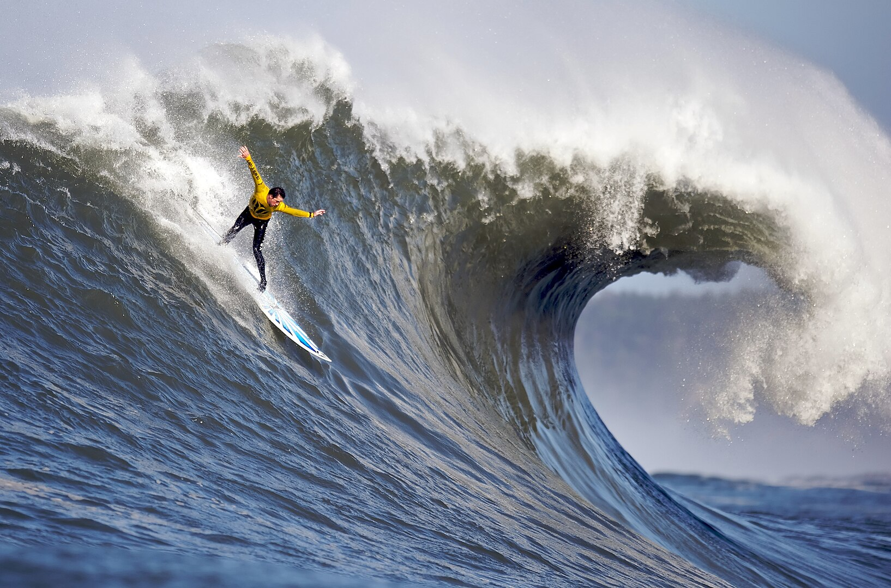

Graphics
Engagement
1. Real life photos are good with JPEG.
2. Cartoon and animation are good with GIF.
3. PNG has something called alpha channel which allows us to make background transparent.
4. We can adjust the size of out photos on css, by defining either the width or the height.
5. So that the file size (in bytes) of the photo is not too big, or in other words so that people do not have to download huge photos.